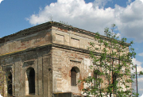
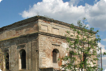

объекты
Замок Сапеги (1590-1619г.) памятник архитектуры
 

Замковый комплекс состоял из нескольких каменных корпусов, создававших в плане неправильный четырёхугольник размерами 75×70 м.
С севера внутренний двор замыкался каменной стеной с выходом на городской вал. Западая сторона замкового комплекса, обращённая к торговой площади, была застроена корпусами казарм, имела посередине въездные ворота с подъёмным мостом и фланкировалась по углам восьмигранными оборонительными башнями.
К югу от башни тянулась каменная стена, позже заменённая деревянными корпусами. За ними размещался каменный двухэтажный служебный корпус, примыкавший к дворцу. Вытянутое здание самого дворца главным удлинённым фасадом было ориентировано на восток, к Днепру, было накрыто двускатной черепичной крышей, по высоте почти равной двум этажам. К середине восточного и торцового южного фасадов дворца прилегают гранёные башни, ранее бывшие пятиярусными и завершались двухъярусными куполами — „баньками“ (влияние архитектуры нидерландского ренессанса). Фасад дворца, обращённый внутрь двора, был оформлен двухъярусной арочной галереей со входами во внутренние помещения. Аркада первого этажа была каменной с крестовыми сводами, на втором этаже галерея была деревянной. Под зданием размещены больше сводчатые подвалы.
Первый этаж (также с мощными крестовыми сводами)занимали служебные помещения, камфы, мастерские. Второй этаж, предназначенный для жилья хозяев, делился на две половины — женскую и мужскую. На торце размещалась приёмная зала, в башнях — часовня, библиотека и кабинет хозяина. Поперечные каменные стены ритмично делят здание на приблизительно одинаковые помещения, имеют анфиладную связь. Такие же поперечные несущие стены, сводчатые перекрытия и анфиладную связь помещений имели и другие каменные корпуса дворцово-замкового комплекса. На сегодняшний день утрачены многие элементы декора строений, завершения башен, первоначальная внутренняя планировка.